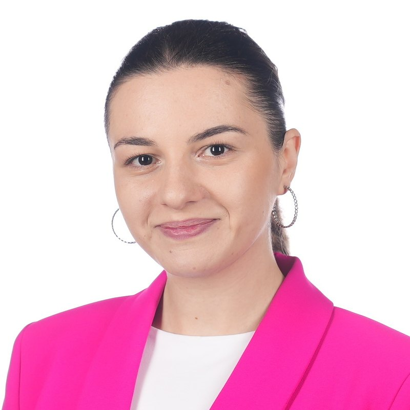

FailBench: How Reliable are VLMs at Judging Robot Task Success?
Preprint · 2026

Researcher · Metric AI Lab · Yerevan
I am a researcher at Metric AI Lab in Yerevan, Armenia. The lab specialises in Physical AI, and my own work is mainly on robotic failure detection — revealing the earlier possible signs of failure, understand when and why the robots fail, develop systems to capture that.
My research also includes text embeddings and retrieval for low-resource languages, especially Armenian, where limited training data remains a central challenge.
Recent
Preprint · 2026
Preprint · 2026
LoResLM @ EACL 2026
Benchmark & leaderboard · 2026
Open models & benchmark · 2026 · presented at LoResLM @ EACL 2026